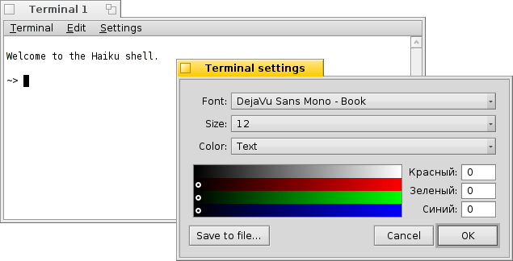
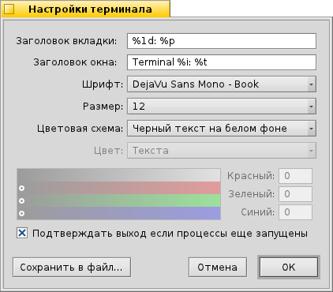

Русский
Русский Català
Català Deutsch
Deutsch English
English Español
Español Français
Français Italiano
Italiano Magyar
Magyar Polski
Polski Português
Português Português (Brazil)
Português (Brazil) Română
Română Slovenčina
Slovenčina Suomi
Suomi Svenska
Svenska 中文 ［中文］
中文 ［中文］ Українська
Українська 日本語
日本語 Терминал (Terminal)
Терминал (Terminal)
| Расположение в Deskbar: | ||
| Расположение в Tracker: | /boot/system/apps/Terminal | |
| Настройки хранятся по адресу: | ~/config/settings/Terminal ~/config/settings/profile - дополняет/переопределяет параметры указанные в /boot/system/etc/profile ~/config/settings/inputrc - дополняет/переопределяет параметры указанные в /boot/system/etc/inputrc |
Терминал - это интерфейс Haiku к командной оболочке bash (Bourne Again Shell)
Пожалуйста обратитесь к теме Bash и скрипты для просмотра ссылок на онлайн уроки по работе с командной оболочкой shell, а также обратитесь к теме Haiku-приложения для командной строки. Здесь же мы сконцентрируемся непосредственно на приложении Терминал (Terminal).
 Окна и вкладки
Окна и вкладки
Вы можете открыть столько Терминалов, сколько вам необходимо, каждый в своем собственном окне, просто запуская новые Терминалы, либо нажимая ALT+N в уже работающем Терминале. Также можно использовать вкладки в Терминале, открывая их комбинацией ALT+T.
Двойной щелчок левой кнопкой мыши по пустом месту панели вкладок открывает новую вкладку. А если дважды щёлкнуть по самой вкладке, то откроется окно, в котором можно изменить заголовок вкладки. Существует несколько переменных, начинающихся с %, значения которых объясняется в всплывающей подсказке, когда вы наводите на курсором на текстовое поле.
По умолчанию установлены %1d: %p, тем самым в заголовок вкладки отображает - текущую папку и название запущенного процесса, которые разделены - : (если вместо названия процесса отображается --, то значит ничего не запущено и оболочка bash ожидает ввода команды). На снимке экрана выше, на первой вкладке отображена FTP-сессия из папки Desktop, а на второй просто открыта папка home.
Выбрав в меню пункт можно изменить заголовок окна Терминала.
Правый щелчок мыши по вкладке вызывает контекстное меню, которое содержит следующие пункты: , , .
У окна Терминала изменяется размер, как и у любого другого приложения, а также имеется возможность использовать предустановленные размеры окна, выберите в меню пункт . Сочетание клавиш ALT+ENTER включает полноэкранный режим.
All the settings you change directly through the menu, like , , or are only kept for the current session. If you want to make permanent changes, you have to apply them in the panel.
Настройки
Выбрав в меню пункт откроется окно настроек Терминала.
Most of the offered settings speak for themselves.
Hover your mouse over the "formulas" for naming tab and window titles to get tooltips for the available variables.
You can choose pre-defined color schema like or or create a one by selecting which color you want to change (, , etc.) and then use the color picker below.
A few more options follow: you can have a and choose to . The latter setting avoids the sometimes rather unsightly rendering of bold fonts in the Terminal.
Activate the checkbox to and you'll be warned when trying to close a Terminal window while an app is still being executed.
| let's you save different settings as separate profiles, which on double-click open an accordingly configured Terminal. | ||
| brings back the settings that were active when you opened the settings panel. | ||
| resets everything to default values. |
Горячие клавиши
Список полезных сочетаний клавиш вы можете найти в данной теме.
Another nice feature that is more a key & mouse combination: When holding ALT a path or URL under the mouse pointer gets highlighted. A left-click opens the file/folder or website. A right-click opens a context menu to either or . Imagine you're in /MyData/source/haiku/ and have the path generated/objects/haiku/x86_gcc2/release/apps/stylededit/StyledEdit under the mouse pointer, the latter menu item will result in the combined, absolute path <deep breath>:
/MyData/source/haiku/generated/objects/haiku/x86_gcc2/release/apps/stylededit/StyledEdit.
If you hold down ALT SHIFT, only the path from beginning to where your mouse pointer sits will be highlighted.
By the way, right-clicking into the Terminal window will insert the clipboard. In combination with copying parts of highlighted paths, this can be used for speedy navigation of deep folder hierarchies.
Настройка командной оболочки Bash
Пришедшая из Unix, командная оболочка Bash имеет очень широкие возможности по настройке. Существуют два наиболее важных для пользователя файла: profile и inputrc
Оба файла могут быть созданы в домашней папке (/boot/home/config/settings/), где они дополняют или переопределяют (т. к. являются более приоритетными) системные настройки по умолчанию, расположенные по адресу /boot/common/etc/.
profile
profile загружается каждый раз, когда вы открываете новый Терминал. Этот файл устанавливает все виды псевдонимов и переменных, которые затрагивают поведение командной оболочки и её внешнего вида. Существует множество онлайн ресурсов, на которых детально описаны все эти возможности.
На сервере Haiku/BeOS Tips имеется довольно много подсказок для начала изучения настроек Bash, например:
Ещё больше настроек находятся здесь.
inputrc
inputrc работает с клавиатурными привязками (keybindings). Так как в Haiku эти настройки вполне пригодны и по умолчанию, то скорее всего менять их не потребуется, но если всё же возникла небходимость их подправить, то рекомендуется обратится к одному из многочисленных онлайн ресурсов, например, The GNU Readline Library.
Подсказки для работы с Терминалом
Перетаскивание файла или папки из окна Tracker-а в Терминал подставит путь к нему у курсора. Перетаскивание правой кнопкой мыши вызовет меню для дополнительных действий:
Вставляет путь к файлу так же, как при перетаскивании левой кнопкой мыши. Переводит Терминал в папку перетаскиваемого файла. Создает симлинк на перетаскиваемый файл в текущей директории Терминала. Перемещает перетаскиваемый файл в текущую директорию Терминала. Копирует перетаскиваемый файл в текущую директорию Терминала. Вы можете открыть любой файл, назначенной ему программой, используя команду open [имя_файла]. Это также сработает для открытия текущей (".") и родительской ("..") папки, которые откроются в окне Tracker-а. Так, чтобы открыть текущую директорию, следует набрать:
open .